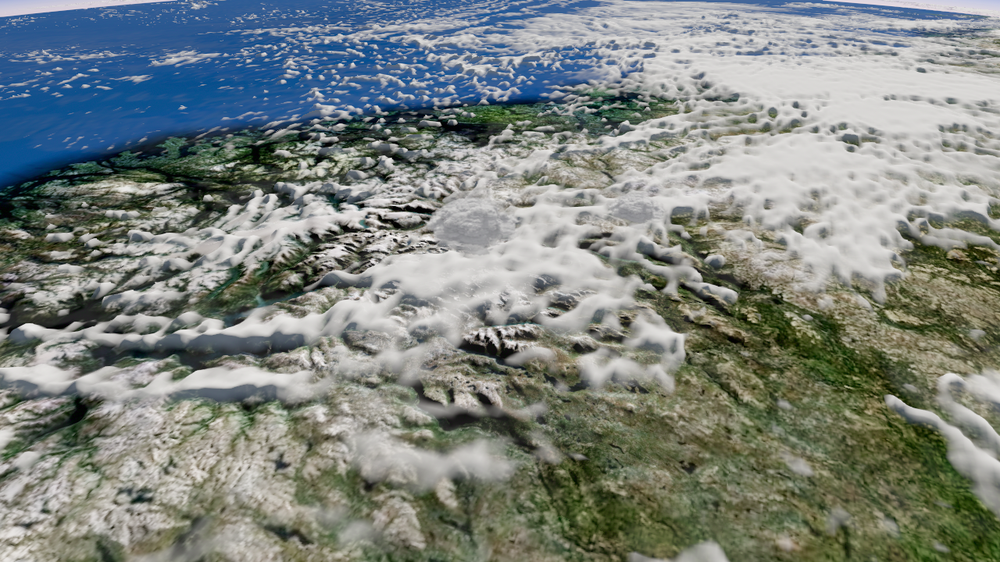
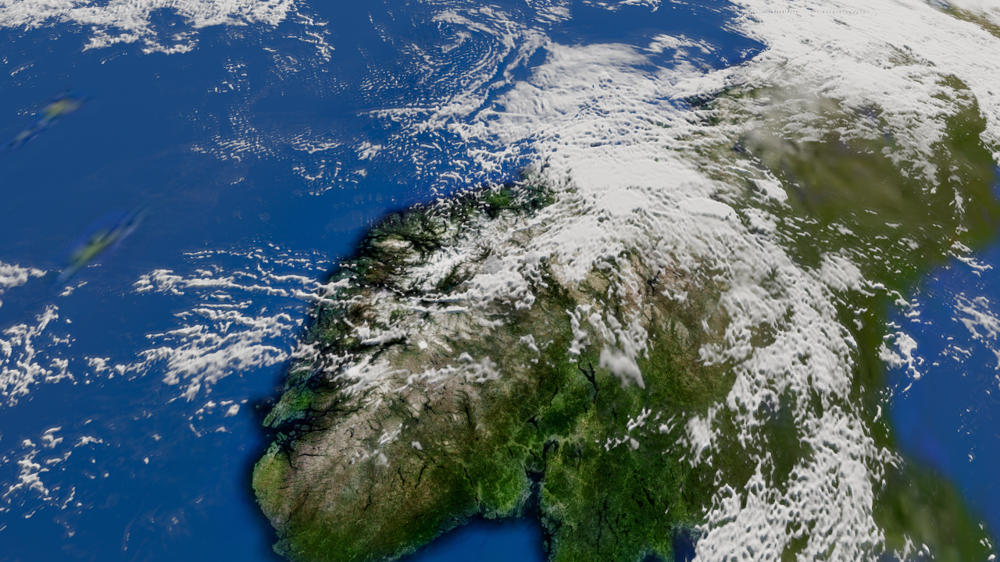
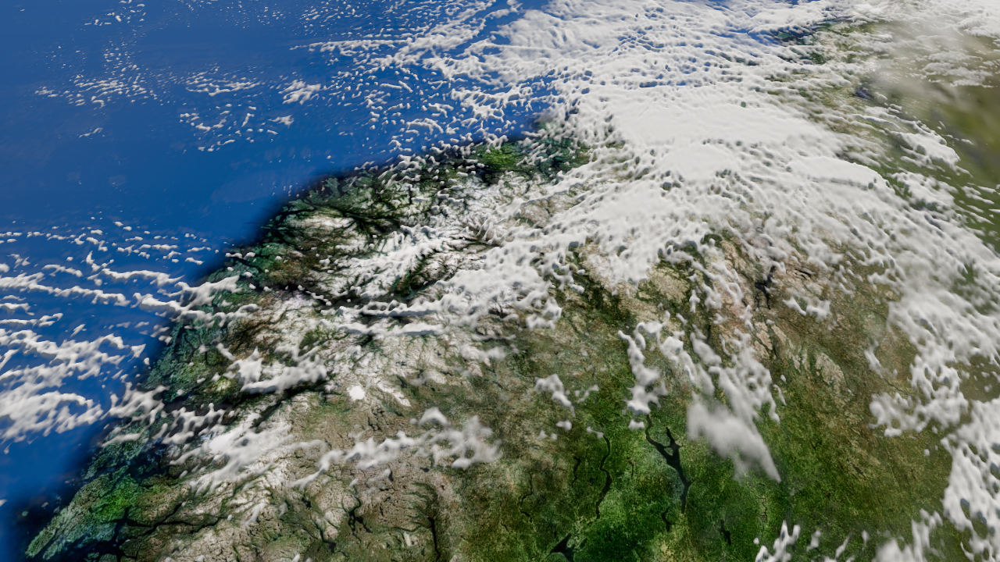
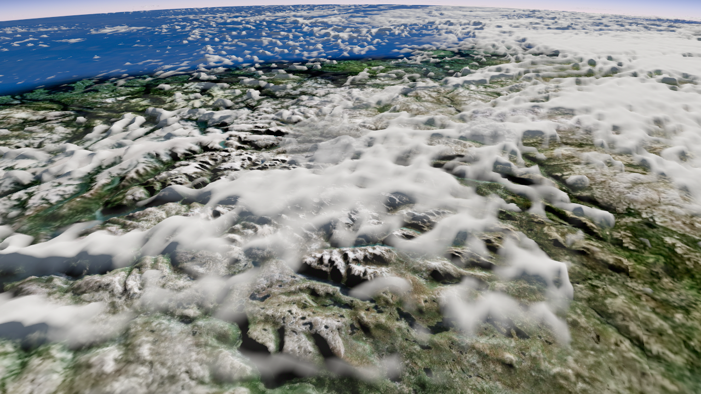
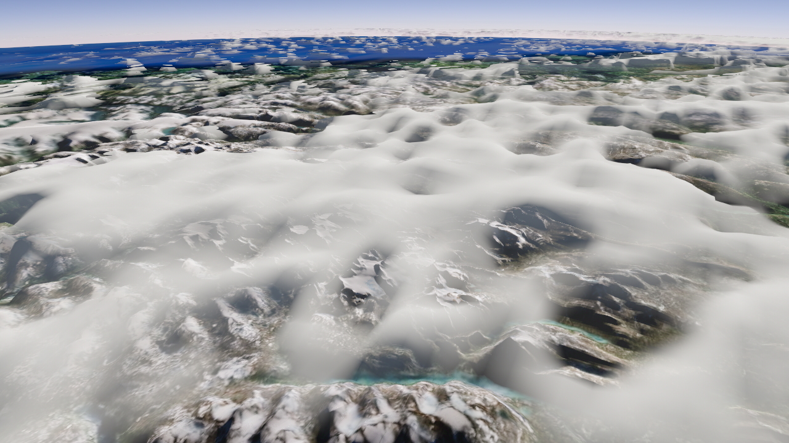
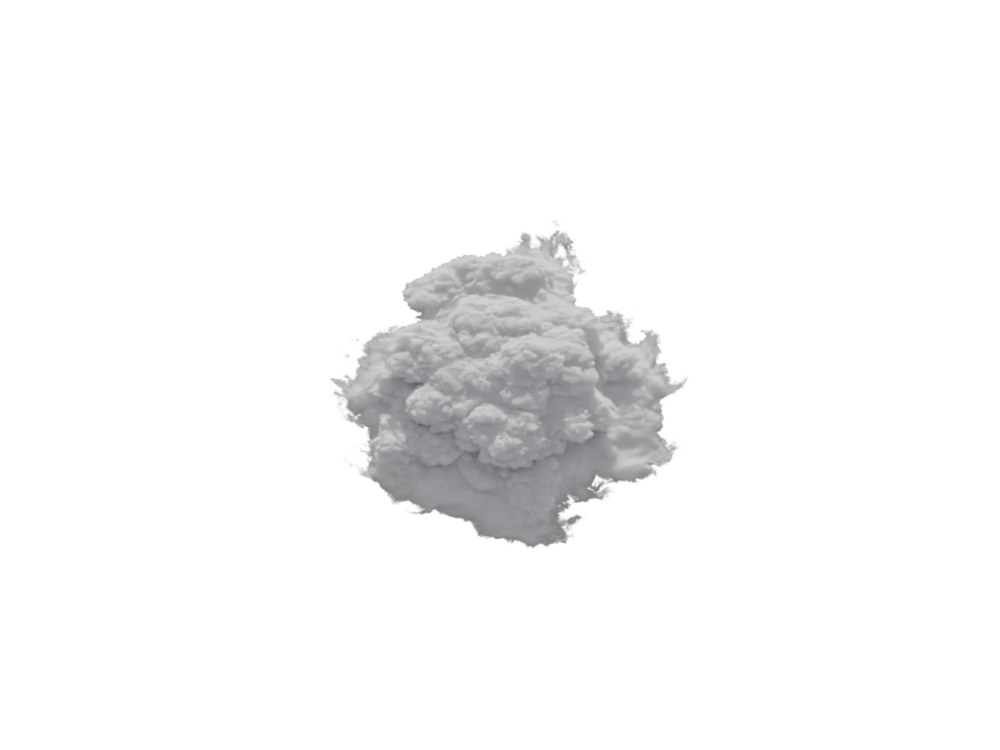
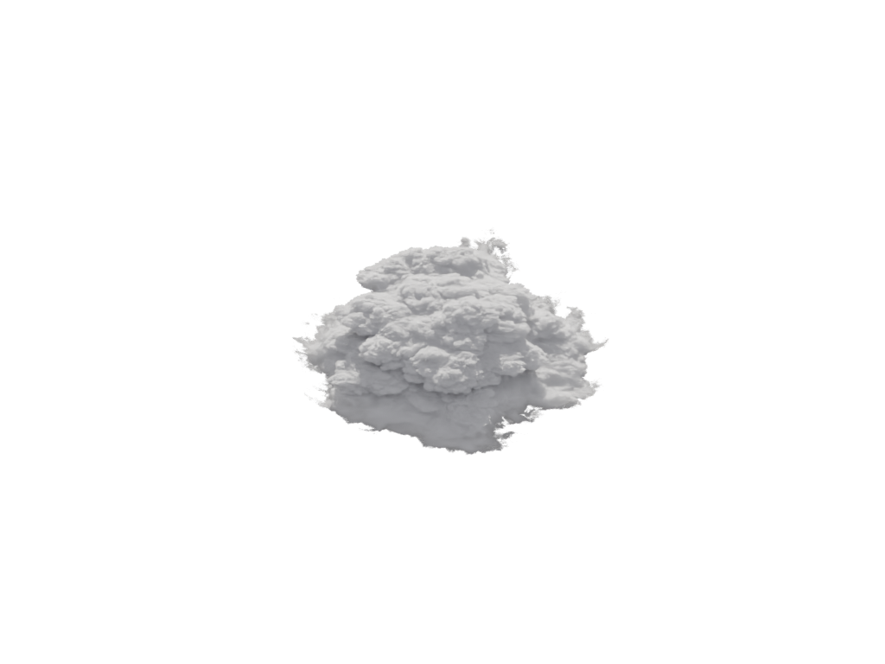
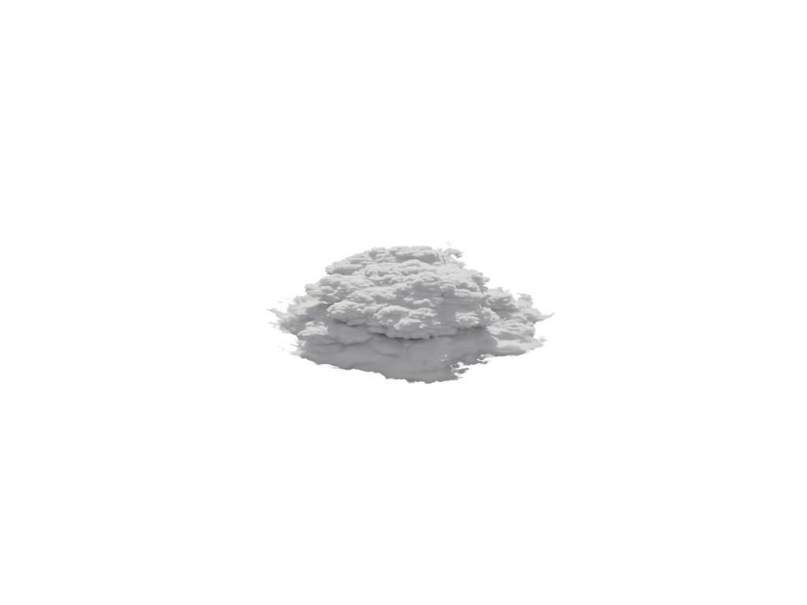
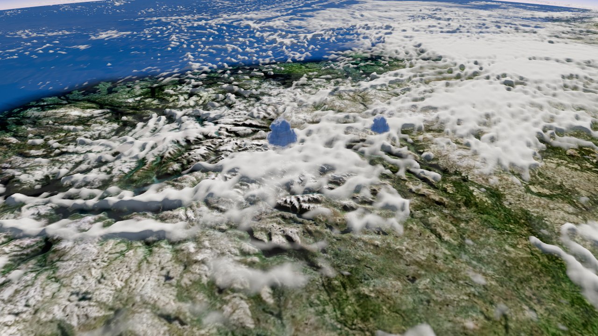

Disney OFF

Disney ON

opt-in 후보 / TUNE / 주 도입부 미채택. 기존 위성 구름 위에 낮은 두 군집만 추가했습니다. source 높이.28과 중립 주변광을 적용한 고정빛·세 관찰각 RGBA impostor입니다. 실제 runtime volume이나 날씨 재현이 아닙니다.
실행 화면 열기 · 상단 Disney 체크로 ON/OFF, 진행 슬라이더 또는 화면 위 휠로 확인하세요.



.265에서50%, .285에서0%입니다. 동일cloud의3D통과를구현한것은아닙니다.





첫bank압축전8구도중지역확대. 삭제하지않고보존했습니다.

Copyright2017 Disney Enterprises Inc · CC BY-SA3.0 · 모델 사진 Kevin Udy. 고도·footprint·주변광은연출근사.